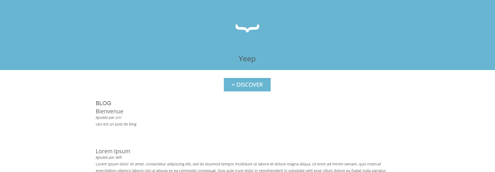
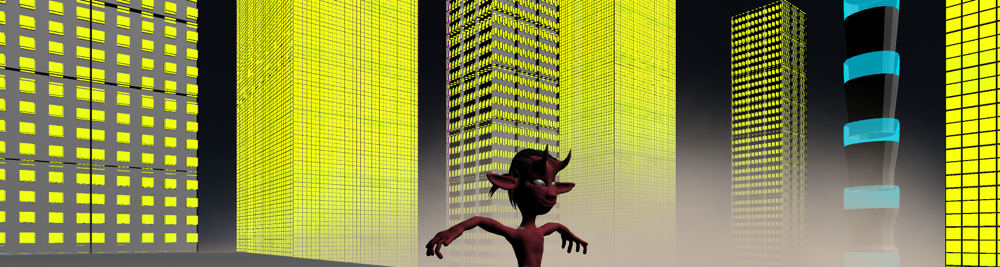
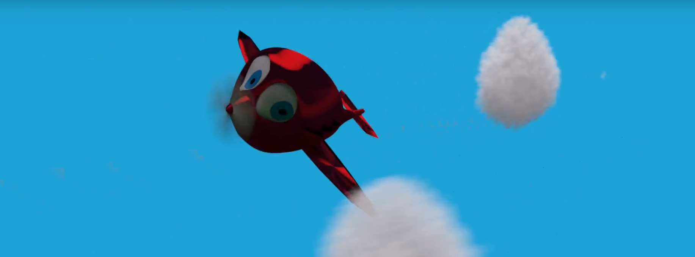
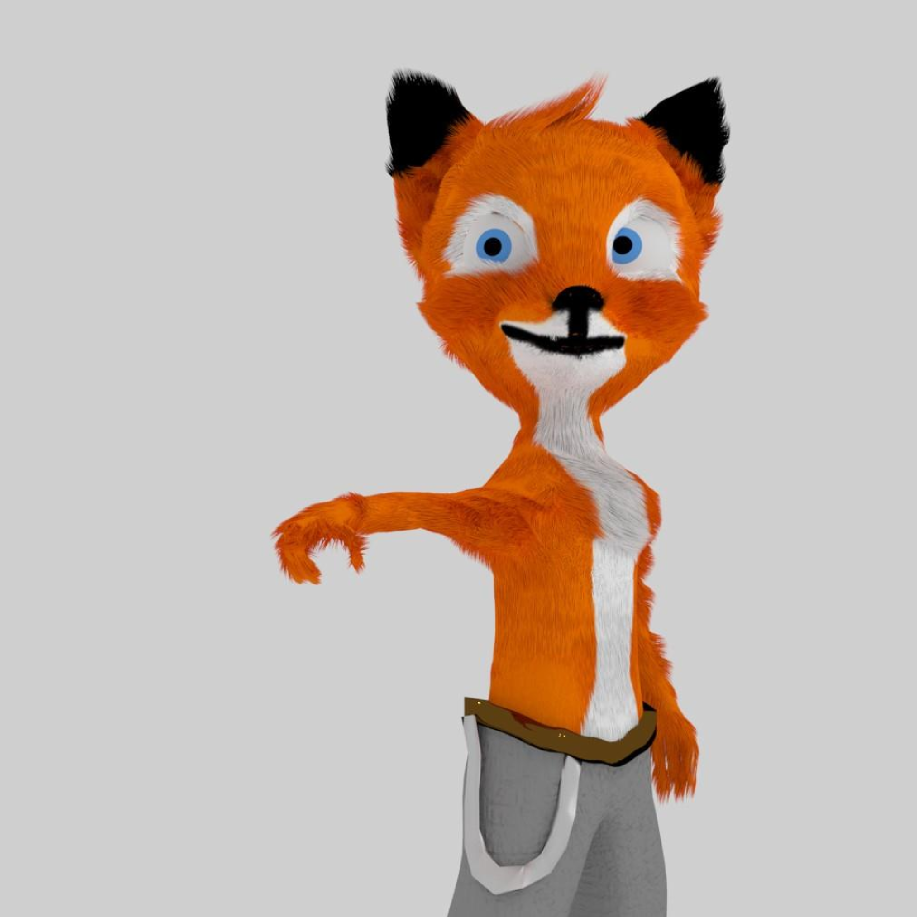

Mes projets sont le coeur de mon univers. Chacun s'inscrit dans mon objectif de perpetuel apprentissage.
Voici un aperçu de mon savoir faire au travers de quelques unes de mes productions.
- Summiz (générateur d'articles)
- Yeep (CMS sans base de données)
- Inferno (Jeu vidéo Unity)
- The red plane (jeu vidéo Unity)
- Animations 3D (Portfolio vidéo)
Créer, concevoir et élaborer. Voici les quelques mots qui définissent pour moi l’entrepreneuriat. Même si pour beaucoup de gens tout part d’une idée, pour ma part, le produit naît avant tout du savoir faire du développeur: la créativité nait de la contrainte.
C’est dans ce cadre qu’il y a 5 ans, j’ai entamé le développement d’un méta-moteur de recherche. A la fin de son développement, je me suis rendu compte qu’il manquait quelque chose à mon produit: il ne reflétait pas ma créativité. J’ai donc codé en quelques jours un aspirateur de sites web, qui allait récupérer les liens et absorber le contenu des articles.
Quelques temps plus tard, après m’être volontairement éloigné du projet pour prendre du recul sur mon travail, je repense mon code. Le travail ne fait que commencer: je veux créer un outil générateur de contenu journalistique dans le milieu du divertissement. Je connais un peu ce milieu: j’ai lu un livre sur Alexandre Malsch, “Il était une fois Melty”, puis un livre sur l’histoire de Kelkoo. Afin de me plonger un peu plus dans le milieu de l’info-divertissement, je me renseigne sur les différents acteurs en france: Melty, Konbini, NextPlz. Mais un média sort du lot: MinuteBuzz. Ce dernier, disponible uniquement sur les plateformes sociales, a fait le pari du 100% vidéos. Cela me donne à réfléchir.
J’ai donc ajouté un système de synthétisation d’articles. L’outil sait désormais créer des articles basiques en récupérant, en synthétisant, puis en modifiant les données des différents sites internet.
Le logiciel est désormais disponible en ligne sur le site www.summiz.com
Technologies utilisées : PHP, MySQL, CSS
Yeep est un CMS sans base de donnée. Ce système de gestion de contenu se contente d'afficher des billets sous forme de texte et d'images. Les billets de blog sont éditables à l'aide d'une page privée accessible via un mot de passe.
Le projet est disponible sur Native.chez.com/Yeep et son code source est téléchargeable sur Github.
L'univers vidéoludique me passionne depuis de nombreuses années. C'est pourquoi je me suis éssayé à la création de jeux vidéo à destination des plus jeunes. Les differents modèles sont modélisés et animés avec Blender et le jeu est créé avec l'aide du moteur de jeux Unity3D. Il s'agit donc d'un jeu de plateforme dont l'objectif est de sauver une princesse.
Jeu vidéo en 3D ou l'objectif est d'éviter les nuages. Jeu réalisé avec Blender et Unity.
Passionné par le rendu et la simulation tri-dimensionnelle, il me paraissait indispensable de découvrir le monde de l'animation. Celui-ci m'a fait découvrir le montage vidéo ainsi que la modélisation, le rigging (squelette du personnage animé), le texturing et l'animation. De plus, je pense qu'il est impossible de vouloir travailler dans le milieu de l'ingénierie, de l'image numérique sans avoir d'experience dans les interfaces graphiques et l'experience utilisateur.
Voici quelques animations 3D réalisées en autodidacte via Blender, rendus avec Cycles et Unity (rendus temps réel).
Les réalisations présentées ci-dessus : Projet Across the stars (court-métrage inspiré du Petit Prince écrit par Antoine de Saint-Exupéry, ou un petit renard voyage dans la galaxie et vit des aventures palpitantes), The red plane (cinématique issue du jeu présenté précedemment), "Brise Lames" (projet de jeu vidéo de stratégie inspiré de WarCraft, Leagues of Legends).
